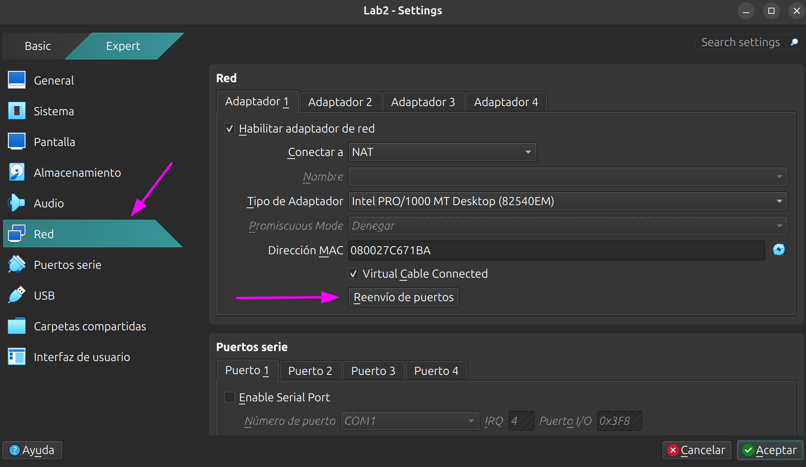
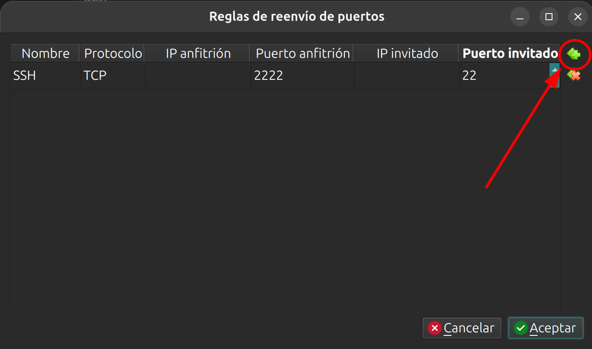

Administración de servidores GNU/Linux
Clase 4: Primer contacto con el servidor
Módulo 1 — Del arranque al acceso remoto
Temas de clase 4
Objetivos de la clase
Al finalizar esta clase vas a poder:
- Explicar qué es systemd y qué lugar ocupa como
PID 1. - Diferenciar un usuario normal, root y un usuario habilitado para
sudo, y distinguirsudesudo. - Dejar el servidor con su locale, teclado, zona horaria y hostname correctamente configurados.
- Actualizar el sistema mediante APT.
- Conectarte a tu servidor por SSH desde tu máquina anfitriona.
Por qué vemos este tema: en la clase 3 estudiamos la secuencia de arranque e instalamos Debian. En esta clase vamos a revisar el sistema ya instalado, completar su configuración inicial y acceder a él de forma remota.
Init y systemd:
El primer proceso del espacio de usuario
Repaso del arranque
En la clase 3 vimos cómo se inicia Linux, desde el firmware hasta el login:
Firmware (BIOS/UEFI) → Bootloader (GRUB) → Kernel + initramfs → init-systemd (PID 1) → Login
GRUB e initramfs ya se explicaron en esa clase. En esta retomamos la secuencia desde systemd, el primer proceso del espacio de usuario.
El sistema init y el PID 1
Se denomina sistema init al software que el kernel inicia como primer proceso del espacio de usuario. SysVinit y systemd son dos implementaciones diferentes de esa función. En Debian actual, el sistema init predeterminado es systemd.
- Cuando el kernel termina de arrancar, inicia el proceso con PID 1.
- A partir de ese proceso se inicia el resto del sistema. También adopta procesos huérfanos y participa en el apagado ordenado del equipo.
- Si el PID 1 termina de forma inesperada, el sistema no puede continuar funcionando normalmente.
De SysVinit a systemd
| SysVinit (clásico) | systemd (actual) | |
|---|---|---|
| Cómo arranca | Scripts ejecutados según el orden definido para cada runlevel | Unidades que pueden iniciarse en paralelo según sus dependencias |
| Qué levanta | Lo que diga el runlevel | Unidades con dependencias declaradas |
| Servicios | Los gestiona mediante scripts de inicio y detención | Puede supervisarlos y reiniciarlos según su configuración |
| Logs | Archivos administrados por syslog y los propios servicios | Journal centralizado, además de otros mecanismos de registro |
| Configuración | /etc/init.d/ + enlaces en
/etc/rc?.d/
|
Archivos .service declarativos |
- Upstart fue otro sistema de inicio utilizado por Ubuntu entre 2006 y 2015.
- Actualmente, systemd es el sistema de inicio utilizado por Debian, Ubuntu, RHEL, Fedora, SUSE y muchas de sus derivadas. Distribuciones como Alpine y Devuan utilizan otras alternativas.
Runlevels y targets
SysVinit utiliza runlevels para representar distintos modos de funcionamiento. systemd utiliza targets con un propósito equivalente y conserva alias de compatibilidad para los runlevels tradicionales:
| Runlevel | Target de systemd | Qué es |
|---|---|---|
| 0 | poweroff.target |
Apagado |
| 1 | rescue.target |
Monousuario, mantenimiento |
| 3 | multi-user.target |
Multiusuario sin entorno gráfico |
| 5 | graphical.target |
Multiusuario con entorno gráfico |
| 6 | reboot.target |
Reinicio |
systemctl get-default # target predeterminado del sistema
systemd: info básica
systemctl status # estado general del sistema
systemctl status ssh # estado del servicio SSH
systemctl list-units --type=service # lista servicios activos
systemctl is-enabled ssh # habilitado en el arranque?
Alcance: en esta clase alcanza con identificar a systemd comoPID 1y utilizarsystemctlpara realizar consultas básicas. La administración de servicios y procesos se desarrollará más adelante.
Consultas
(Arranque → sistema init → PID 1 → systemd → targets → systemctl)
Login e identidad:
TTY, prompt, root y sudo
TTY y consolas virtuales
- Un TTY es una terminal. El nombre proviene de los teletipos, las terminales físicas utilizadas durante las décadas de 1960 y 1970.
- Linux ofrece varias consolas virtuales en simultáneo:
tty1atty6. - Se cambia entre ellas con Ctrl + Alt + F1 … F6.
- En VirtualBox hay que usar la tecla anfitriona: por defecto Ctrl derecho + F1 … F6.
La consola local o la consola remota de gestión permite intervenir cuando SSH no está disponible, por ejemplo, ante un problema de red, falta de espacio en disco o una configuración incorrecta del firewall.
Formato del prompt
cristian@lab2-vm:~$
│ │ │└─ tipo de usuario ($user | #root)
│ │ └── directorio actual (~ para home)
│ └───── nombre del host
└────────────── usuario conectado
| Símbolo | Significado |
|---|---|
$ |
Usuario normal |
# |
root — usuario con privilegios administrativos |
El último carácter del prompt ayuda a reconocer si la sesión pertenece a un usuario normal o a root.
El prompt es configurable
El ejemplo anterior muestra el formato habitual del prompt de Bash en Debian. No es un
formato fijo: puede incluir colores, información adicional o una distribución diferente
según la distribución y el shell utilizado. En Bash se configura mediante la variable
PS1, normalmente desde ~/.bashrc.
echo "$PS1" # Ver la configuración actual del prompt
Los símbolos $ y # son una convención frecuente para distinguir un
usuario normal de root, pero también forman parte de la configuración y pueden modificarse.
root: superusuario / administrador
- Usuario normal: es la cuenta personal con la que iniciamos sesión. Tiene acceso a sus propios archivos y solo puede realizar las tareas permitidas por los permisos del sistema.
- root: es la cuenta de administrador del sistema y tiene el UID 0. Puede leer, modificar o eliminar cualquier archivo, cambiar permisos y administrar otras cuentas.
- Usuario habilitado para
sudo: sigue siendo un usuario normal, pero está autorizado para ejecutar determinados comandos con privilegios de root. En la configuración predeterminada de Debian, esta autorización se asigna mediante el gruposudo.
No existe un tipo de cuenta llamado “usuario sudo”: sudo es el comando que
permite elevar privilegios de forma controlada. Para el trabajo cotidiano se utiliza la
cuenta personal y se recurre a sudo solo cuando la tarea requiere permisos
administrativos.
id # UID, GID y grupos del usuario actual
groups # grupos a los que pertenece el usuario
Fuentes: Debian Reference — The root account, Guía de instalación de Debian 13 — Configuración de usuarios
su vs sudo
su |
sudo |
|
|---|---|---|
| Qué contraseña pide | La de root | La del usuario que ejecuta el comando |
| Alcance | Abre una sesión completa como root | Ejecuta un comando y vuelve |
| Trazabilidad | La sesión se ejecuta con la identidad de root | Registra qué usuario solicitó la elevación |
| Si hay varios admins | Todos comparten la misma clave | Cada uno con su cuenta |
su - # sesión completa como root (clave de root)
sudo apt update # un solo comando elevado (pide tu clave)
sudo -i # sesión interactiva como root vía sudo
- La configuración principal de
sudose encuentra en/etc/sudoers. Debe modificarse convisudo, que valida la sintaxis antes de guardar. Un error en este archivo puede impedir la elevación de privilegios. - En la configuración predeterminada de Debian, los integrantes del grupo
sudopueden utilizar este comando.
Consultas
(TTY → prompt → root → su vs sudo)
Post-instalación:
Dejar el sistema identificado, localizado y actualizado
Qué es la post-instalación
La post-instalación reúne las tareas necesarias para dejar el sistema identificado, actualizado y listo para administrarlo. Incluye la configuración regional, la hora, el nombre del equipo, los repositorios y el acceso remoto.
1. Identificar el sistema
Antes de modificar el sistema, conviene identificar la máquina y revisar su estado general.
cat /etc/os-release # distribución y versión
uname -a # kernel y arquitectura
hostnamectl # nombre, SO, kernel, tipo de máquina
lsblk # discos y particiones
ip a # interfaces de red
df -h # espacio en disco
Estas consultas reducen el riesgo de aplicar cambios en el equipo equivocado, especialmente cuando se administran varios servidores mediante SSH.
2. Locales: el idioma del sistema
Un locale define idioma, codificación de caracteres, formato de fecha, separador decimal y orden alfabético.
locale # ver la configuración actual
sudo dpkg-reconfigure locales # generar y elegir locales
/etc/locale.gen→ qué locales se generan./etc/default/locale→ cuál usa el sistema por defecto.- Variables:
LANG(el general) y lasLC_*(para ajustes puntuales).
Idioma para un servidor
En un entorno productivo suele utilizarse un locale en inglés, como en_US.UTF-8
o C.UTF-8:
- Facilita la búsqueda de mensajes de error y su comparación con la documentación.
- Evita cambios inesperados en la salida de comandos que algunos scripts procesan como texto.
- Coincide con el idioma predominante en la documentación técnica.
En el curso vamos a utilizar el sistema en español es_AR.UTF-8. Es una
decisión para el laboratorio; en otros entornos debe definirse un criterio común y
mantenerlo de forma consistente.
3. Teclado
La distribución del teclado es independiente del locale. Determina qué carácter corresponde a cada tecla en la consola local.
sudo dpkg-reconfigure keyboard-configuration
sudo setupcon # aplicar sin reiniciar
- Configuración en
/etc/default/keyboard→XKBLAYOUT="latam"para teclados latinoamericanos. - Verificación:
localectl status.
Una distribución incorrecta dificulta el uso de símbolos frecuentes como|,/,@y~. También puede provocar errores al ingresar contraseñas, ya que la pantalla no muestra los caracteres escritos.
4. Hora y zona horaria
timedatectl # estado actual
sudo timedatectl set-timezone America/Argentina/Buenos_Aires
sudo timedatectl set-ntp true # sincronización automática
- La zona horaria es un enlace:
/etc/localtime→/usr/share/zoneinfo/... - La sincronización la maneja
systemd-timesyncden una instalación estándar de Debian. - El reloj de hardware se mantiene en UTC y la zona horaria se aplica encima.
Importancia de la hora del sistema
- Logs: si dos servidores tienen relojes distintos, resulta difícil reconstruir el orden de los eventos durante un incidente.
- Certificados TLS: tienen fecha de inicio y de vencimiento. Un reloj desfasado los invalida.
- Tareas programadas:
crony los timers de systemd dependen del reloj. - Autenticación: Kerberos, TOTP y otros mecanismos pueden fallar cuando existe un desfase de varios minutos.
5. Actualización del sistema
sudo apt update # actualizar la lista de paquetes disponibles
sudo apt upgrade # instalar las actualizaciones
apt updatesolo descarga la información más reciente de los repositorios; no instala actualizaciones.- Los repositorios son los servidores desde donde Debian descarga los paquetes firmados.
aptse usa para distribuciones derivadas de Debian, como Ubuntu, Mint y Devuan. Para otras distribuciones, se utilizan gestores de paquetes diferentes:dnfen Fedora y RHEL, yapken Alpine Linux,pacmanen Arch Linux.
Consultas
(Identificar → localizar → actualizar)
Primer acceso por SSH:
De la consola local al acceso remoto
SSH
SSH (Secure Shell) es un protocolo de red que permite administrar sistemas de forma remota mediante una conexión cifrada. Reemplaza a protocolos antiguos como Telnet y rlogin, que transmitían las credenciales en texto plano.
Acceso remoto al servidor
Hasta ahora utilizamos la consola de VirtualBox. A partir de esta clase vamos a administrar la VM mediante SSH desde la máquina anfitriona. Esto permite trabajar con la terminal habitual del equipo, copiar y pegar texto y mantener varias sesiones abiertas.
Verificar el servidor SSH
Durante la instalación de la clase 3 seleccionamos SSH server en
tasksel. Podemos comprobar su estado con los siguientes comandos:
systemctl status ssh # ¿está corriendo?
systemctl is-enabled ssh # ¿arranca solo?
ss -tlnp | grep :22 # ¿escucha en el puerto 22?
El esquema de red del curso
La VM tendrá un solo adaptador de red configurado en modo NAT. Este modo permite que nuestro servidor Linux acceda a Internet y, mediante una regla de reenvío de puertos, que la máquina anfitriona (nuestra laptop) se conecte al servicio SSH de la VM.

Regla de reenvío de puertos
En Avanzadas → Reenvío de puertos, agregar la siguiente regla:
| Nombre | Protocolo | IP Anfitrión | Puerto anfitrión | IP invitado | Puerto invitado |
|---|---|---|---|---|---|
| SSH | TCP | 2222 | 22 |

Con esta regla, VirtualBox recibe las conexiones al puerto2222de la máquina anfitriona y las reenvía al puerto22de la VM.
Conectarse desde el anfitrión
ssh -p 2222 usuario@localhost
- Windows 10/11 trae cliente OpenSSH integrado: funciona desde PowerShell o CMD. No hace falta instalar PuTTY.
- Linux y macOS:
sshdirecto en la terminal. - La primera conexión muestra la huella digital (fingerprint)
del servidor. Después de verificarla y aceptarla, el cliente la guarda en
~/.ssh/known_hostspara detectar cambios en conexiones posteriores.
Consultas
(SSH server → NAT → reenvío de puertos → conexión desde el anfitrión)
Resumen de la clase
- systemd se ejecuta como
PID 1, inicia las unidades del sistema y organiza los modos de funcionamiento mediante targets. - root es la cuenta administrativa con UID 0. Un usuario normal
habilitado para
sudopuede elevar sus privilegios cuando una tarea lo requiere. - La post-instalación incluye la identificación del sistema, el locale, el teclado, la hora, el hostname y la actualización de paquetes.
- En servidores productivos suele utilizarse un locale en inglés y mantener los relojes sincronizados.
- SSH permite administrar el servidor desde la máquina anfitriona
mediante el reenvío de los puertos
2222a22en VirtualBox.
Actividades prácticas y laboratorios
Actividad práctica
Post-instalación y primer acceso remoto
Enlace al laboratorio: Laboratorio 3 — Post-instalación y primer acceso por SSH
Referencias
Documentación oficial de Debian
- Debian Reference — Inicialización del sistema
- Debian Reference — La cuenta root
- Guía de instalación de Debian 13 — Configurar usuarios y contraseñas
- Debian Wiki — Locale, Keyboard, DateTime, sudo, SSH
Manuales y proyectos upstream